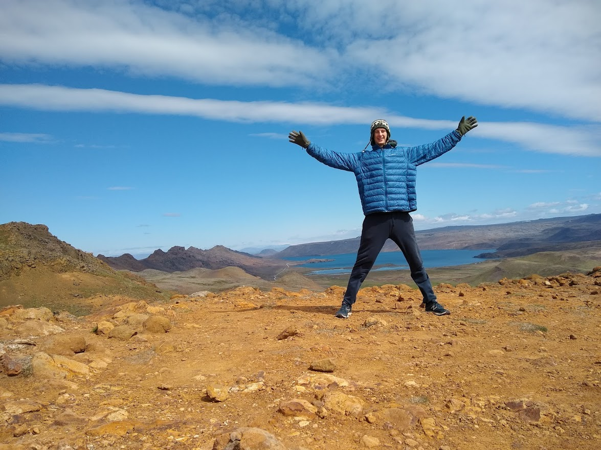
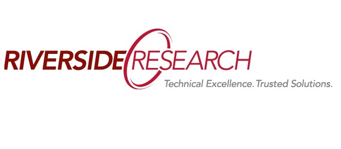
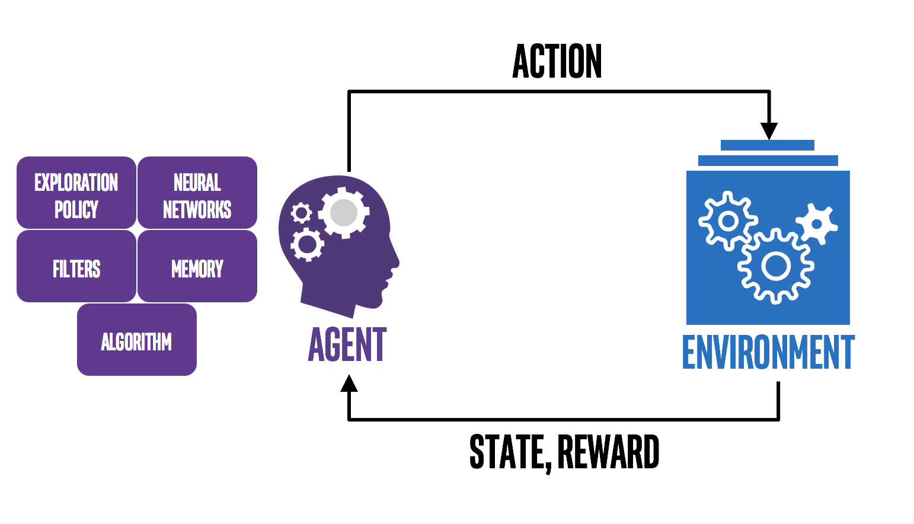
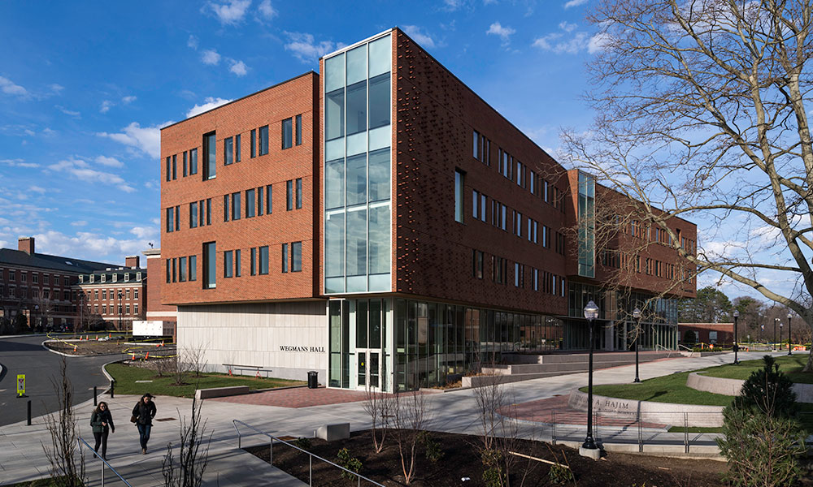

About Career Profile

I currently work as a Principal AI Engineer at General Dynamics Information Technology (GDIT), rapidly prototyping AI native systems and web applications. I recently completed a Master's in Computer Science at the University of Chicago. I also graduated from the University of Rochester with a Computer Science B.S., Applied Mathematics B.S., and Physics B.A., and Engineering Science B.A.. I find theoretical work in mathematics and computer science fascinating. When I am not building AI systems, reading up on the latest AI research, or thinking about the profound impacts AI will have in the coming years, I enjoy reading about results in complexity theory, logic, number theory, and information theory such as the Completeness and Incompleteness Theorems of First and Second Order Logic, the Source Coding Theorem, Cook's Theorem, and the Prime Number Theorem.
While some of the theoretical results mentioned above are absolutely fascinating, I am also motivated by improving the lives of other as effectively as I can. I annually contribute 10% of my income to Givewell, an organization dedicated to improving the wellbeing of humankind through funding the most efficient charities.
Work History
Principal AI Engineer
General Dynamics Information Technology (Remote)
November 2025 – Present
Rapidly prototyping AI native systems and web applications built with a combination of custom models and state of the art VLMs. Areas of focus include deploying AI systems on edge compute, sensor fusion, and integrating AI into secure enterprise workflows.
Sr. Software Developer
General Dynamics Information Technology (Remote)
October 2023 – November 2025
Supporting USSOCOM operations as a full stack web developer in an Agile team. Lead migration of Ruby on Rails application suite to Kubernetes using AWS services.

Fullstack Software Developer
Riverside Research, Centreville, VA (Remote)
January 2021 – October 2023
Supporting the Collection Planning Suite, a large-scale web application used for satellite scheduling. Tools I used include C#, .NET, Oracle SQL, JavaScript, HTML, Jira, Agile, Windows Server, and AWS.
AI/ML Scientist I
Riverside Research, Centreville, VA (Remote)
April 2020 – January 2021
Investigated applications of AI/ML to operations in space asset planning. Designed and developed a novel optimization scheme for satellite scheduling, with a finished prototype in Python.
Machine Learning and Quantum Chemistry Internship
Argonne National Laboratory, Chicago, IL
May 2022 – October 2022
Researched Auger spectra decay prediction based on molecular structure in support of the Quantum Chemistry and Molecular Physics group. This work involved implementing and managing large scale deep learning systems in Python.

Research Experience for Undergraduates
University of Rochester
In Summer 2020 I delved into the world of state of the art reinforcement learning. For anyone else interested in this area I highly reccomend YouTube courses by Sergey Levine and David Silver.
I ended up focusing my research on reinforcement learning in multiplayer competitve environments. I developed a couple novel algorithms based off of ideas in meta learning and game theory. Read more about this research here!
Hamburg Research Internship
Technical University of Hamburg (TUHH)
I received a DAAD scholarship to do computer science research at the Technical University of Hamburg in Summer 2019. My research focused on the ‘informative path planning’ problem. The goal of the research was to develop and compare sampling based path planning algorithms for 2D field exploration (e.g. temperature field or topography map). The fields were modelled using Gaussian Processes and Gaussian Markov Random Fields and then various sampling algorithms were implemented (in Python) to efficiently plan informative exploratory paths.

Computer Science Teaching Assistant
University of Rochester
Lab teaching assistant for Intro to Computer Science course in Java (CSC 171), teaching fundamentals of CS and helping on programming projects.
Teaching assistant for advanced Computer science course, Design & Analysis of Efficient Algorithms (CSC 282), leading problem sessions.
Chemistry and Physics Workshop Leader
University of Rochester
Teaching assistant for Chemical Principles for Engineers course (CHM 137) and Electricity and Magnetism (PHY 122), leading weekly recitations and workshops.